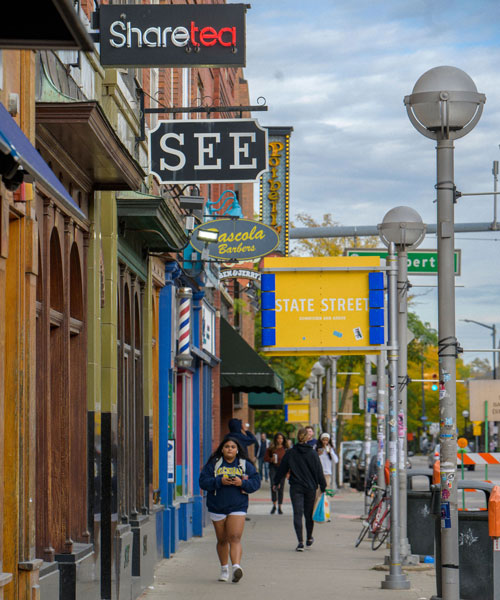

CAPS offers both in-person and virtual services. CAPS is committed to creating an evironment based on our values of multicultural, multi-disciplinary, and multi theoretical practices that allow our diverse student body to access care, receive high quality services and take posite pathways to mental health.
We have a limited number of private spaces for students to connect with their counselor.
First Year Guide
Connect with Us
Michigan Union 4th Floor
Phone: (734) 764-8312